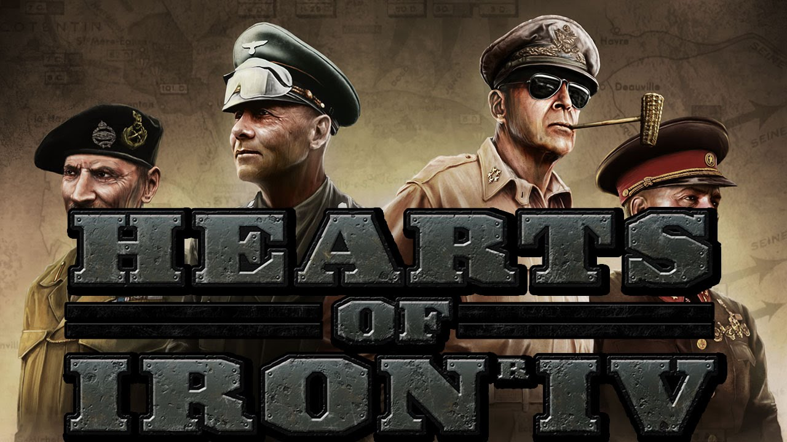

Here's some music to listen to while you scroll.
HTML stands for -
Hyper
Text
Markup
Language
CSS stands for -
Cascading
Style
Sheets
I am an aspiring HTML, CSS and JS developer.
I have been working on learning JavaScript for a while now,
But no matter what I do, I always just seem to forget things.
Other than knowing very basic HTML and CSS, I don't know a lot about coding, really.
Outside of coding, my favourite thing to do has always been gaming.
My favourite game, if I had to choose, is Hearts Of iron 4, but it's roughly a draw between that and minecraft.
My main platform for communication is revolt, I go by they/them pronouns because I'm build different I guess
I like the military but unfortunately cannot join due to my autism, physical fitness is very important to me.
If you would like to contact me for whatever reason, I will leave contact information at the end of this page.